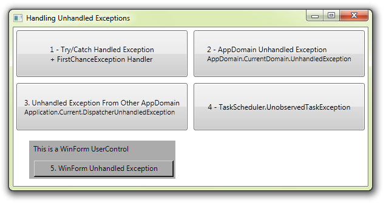

Handling Unhandled Exceptions in WPF (The most complete collection of handlers)
Introduction
This is the ultimate collection of unhandled exception event handlers for WPF. There are FIVE different event handlers you can call upon to catch that ellusive bug, before you application dies. Examples of each are shown, with how to catch, handle, log and usually overcome the critical events.

Building & Running the Sample
Just download, unzip, open and build!
Note: Because this is an exception handling demo, you will need to either:
A) Keep pressing F5, to continue past each debugger catch
B) Build the project and run from the exe in bin/debug folder.
Description
This project contains everything you need to handle just about every unhandled exception in WPF.
1. AppDomain.CurrentDomain.FirstChanceException
This is new to .Net 4 and is extremely useful for ensuring that you ALWAYS log SOMETHING. Whenever any kind of exception is fired in your application, a FirstChangeExcetpion is raised, even if the exception was within a Try/Catch block and safely handled. This is GREAT for logging every wart and boil, but can often result in too much spam, if your application has a lot of expected/handled exceptions. In this example, because this handler is active, it will fire for every example, before the other handler reacts.
2. Application.DispatcherUnhandledException
This is the main exception event for most application unhandled exceptions. It also has a Handled property with which you can try to recover and continue after the exception.
3. AppDomain.CurrentDomain.UnhandledException
Although Application.DispatcherUnhandledException covers most issues in the current AppDomain, in extremely rare circumstances, you may be running a thread on a second AppDomain. This event conveys the other AppDomain unhandled exception, but there are no Handled property, just an IsTerminating flag.
4. TaskScheduler.UnobservedTaskException
If you are using Tasks, then you may have "unobserved task exceptions". This event allows you to trap them. It also has a method called SetObserved, which allows you to try to recover from the issue.
5. System.Windows.Forms.Application.ThreadException
If you are hosting any WinForm componants in your WPF application, this final event is one to watch. There's no way to influence events thereafter, but at least you get to see what the problem was.
Logging Exceptions and Inner Exceptions.
Inner exceptions are very commonly used in WPF, as XAML errors (like missing resources) are often more meaningfully detailed in the Inner Exception. All of the event handlers for the events above use one logging function, shown below:
class Log
{
static Log log;
private Log() { }
public static Log GetInstance()
{
if (log == null)
log = new Log();
return log;
}
internal void ProcessError(Exception exception)
{
var error = "LOGGED: Exception = " + exception.Message;
while (exception.InnerException != null)
{
exception = exception.InnerException;
error += " : Inner Exception = " + exception.Message;
}
//This is where you save to file.
MessageBox.Show(error);
}
}
class Log { static Log log; private Log() { } public static Log GetInstance() { if (log == null) log = new Log(); return log; } internal void ProcessError(Exception exception) { var error = "LOGGED: Exception = " + exception.Message; while (exception.InnerException != null) { exception = exception.InnerException; error += " : Inner Exception = " + exception.Message; } //This is where you save to file. MessageBox.Show(error); } }